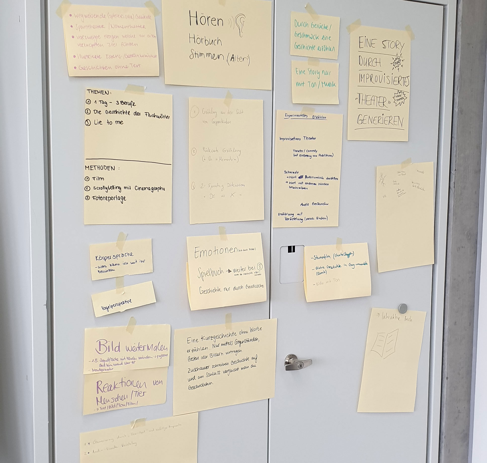
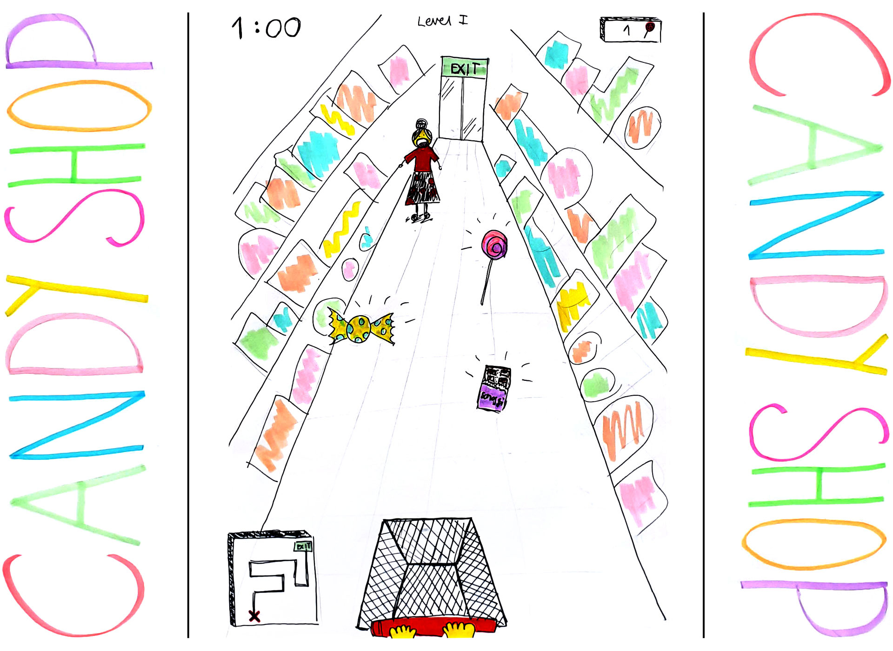
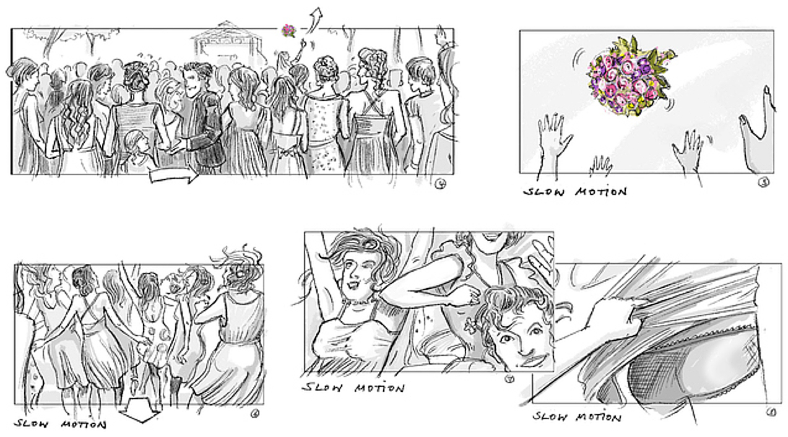
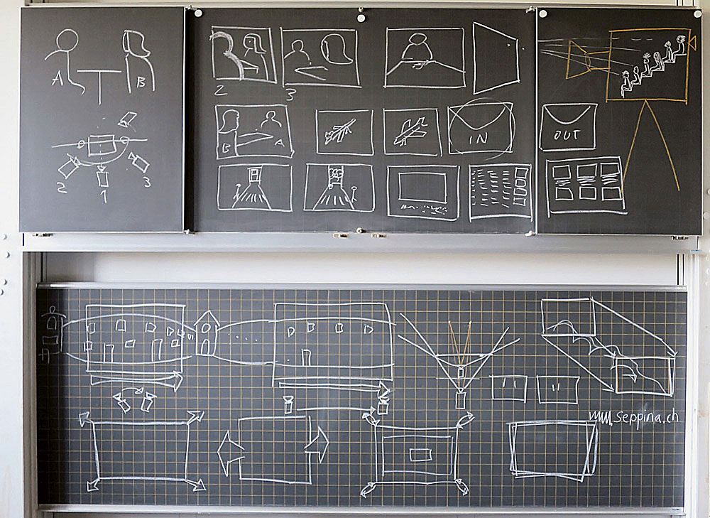

Wie alles begann
24. August 2019
«Was versteht ihr unter experimentellem Erzählen?» An unserem zweiten Schultag der Interaction Ausbildung, wurde uns zu Beginn der Schulstunde genau diese Frage gestellt. Gar nicht so einfach aus dem Stehgreif eine Antwort zu finden. Es galt nun herauszufinden was experimentelles Erzählen genau sein könnte und welcher Zusammenhang mit Interaction Design besteht. Unser Dozent Basil Vogt - ein erfahrener Animations-Designer – brachte uns die Thematik mit einer ersten Übungen näher.
Mit unterschiedlichen Warm Up Übungen begannen wir den Unterricht und lernten auch so die Mitschüler besser kennen.
Die menschliche Kamera
Als Basil Vogt die leeren Dias aus einer Schachtel kramte staunten wir nicht schlecht. Wozu würden wir diese gebrauchen? Wie es der Titel bereits ankündigt, war jeder in einer Dreier- oder Vierergruppe dreimal eine lebende Kamera sowie dreimal Fotograf. Blind jedoch geführt wurde «die Kamera» an einen spannenden Ort geführt und durch drücken am Arm für zehn Sekunden die Augen geöffnet.
Zurück im Schulzimmer wurden die gesehenen Bilder anschliessend auf jeweils ein leeres Dia skizziert. In einer ersten Reihenfolge hingelegt, durfte die Geschichte mit weiteren frei erfundenen Dias ergänzt und schlussendlich eine Geschichte. Diese wurde als Original-Story aufgeschrieben.
Im Anschluss liessen wir die Geschichten auf den Tischen liegen und rotierten zweimal im Uhrzeigersinn herum und erfanden zusammen in der Gruppe jeweils eine neue Geschichte. Danach wurden alle Geschichten mithilfe eines Diaprojektors an die Tafel projiziert und die beiden nicht Original-Stories wurden vorgelesen. Am Ende las die Ursprungs-Gruppe ihre Original-Version vor. Durch das Vergleichen in der Klasse wurden Parallelen oder komplette Abweichungen analysiert.
Ein solches Experiment war absolutes Neuland für mich und das «Out-of-the-box-thinking» machte mir grossen Spass!

Der Kettensatz
Am Nachmittag stand ein weiteres Experiment auf dem Plan. Beim Kettensatz wurde bei einer Person mit einem einzigen Wort gestartet. Das Ziel war es, dass die Person, welche daneben sass, den Satz mit einem weiteren neuen Wort ergänzte. Bespiel: die erste Person sagte «Heute» und die zweite Person ergänzte mit «habe». Daraus entstand dann der Satzanfang: «Heute habe …». So ging es weite, bis jede Person unserer Klasse ein Wort dazugedichtet hatte.
Was nicht ganz einfach und die Herausforderung der Übung war, dass die letzte Person auch mit nur einem Wort den Satz beenden musste. Zum Erstaunen von allen, ergaben alle drei Kettensätze am Ende mehr oder weniger Sinn. Bei einer Folge-Hausaufgabe dienten diese drei Kettensätze dazu der Anfang von einer Geschichte zu bilden, welche von uns Schülern im Verlauf bis zur nächsten Lektion mit neuen Sätzen weitergeschrieben.
Was mir an diesem Modul besonders gefällt ist die Tatsache, dass es unendliche Methoden und Mittel gibt, eine Erzählung zu generieren und diese dann am Ende für eine Geschichte oder ein Produkt verwenden kann.
Projektstart
07. September 2019
Schon in der ersten Lektion wurde «ein Projekt über experimentelles Erzählen» angedeutet. Details ausser der Ort wo die Experimente stattfinden würden, waren uns bis zu diesem Zeitpunkt nicht bekannt und wir waren alle bereits sehr gespannt. Der Schauplatz dafür war der Flohmarkt auf dem Kanzelei-Areal in Zürich.
Jeder Student konnte über ein paar Minuten hinweg Gedanken, Wünsche, Interessen oder Möglichkeiten für ein Experiment notieren. Diese wurden danach der Klasse kurz präsentiert. Anschliessend wurden anhand der gleichen Interessen Gruppen gebildet. War das Team gefunden ging es weiter mit Brainstorming und einer ersten Grundidee.

Erste Ideen
Da meine Gruppe ähnlichen Gedanken und Wünsche hatte, waren wir uns schnell einig in welche Richtung die Experimente gehen sollten. Wir waren in der Sparte Theater, Emotionen und Reaktionen unterwegs und mussten uns mögliche Experimente für den geplanten Ausführungsort erarbeiten. Wie z.B. welche Wendungen kann eine Geschichte nehmen, wenn ihr Verlauf durch improvisierende Protagonisten sowie die Reaktionen einer zusätzlich involvierten, jedoch nichtsahnenden Person bestimmt wird? In welche Richtungen lässt sie sich die Geschichte lenken und wo gerät sie allenfalls ausser Kontrolle?
Unsere geplanten Experimente:
- heikle Situation provozieren, Schlichten hervorrufen vom Standbetreiber
- Empfehlung einholen bei einem Standinteressent
- Gegenstand reservieren, andere Person möchte den Gegenstand ebenfalls kaufen.
- mit Fremdwährung etwas erwerben
- Tauschhandel probieren
- Die Standverkäuferin in das Projekt involvieren und mit ihr zusammen improvisieren
- Tauschhandel mit Zeit
- Standverkäufer fragen ob er/sie bereit wäre, seinen Stand zu verlassen und jemand übernimmt die Verantwortung vom Stand
Ein Spiel entwickeln
Am Vormittag bekamen wir als Aufwärmübung die Aufgabe, mit Hilfe einer Zeitungs-Kurzgeschichte ein Spiel zu entwickeln. Eine super spannende Aufgabe welche wir in einer Dreiergruppe ausführten. Relativ schnell hatten wir uns für eine der zur Auswahl stehenden Geschichten entschieden und legten direkt los mit dem Brainstorming. Nach dem gemeinsam Beraten hatten wir uns für ein Single Player Mobile/App/Computer Game entschieden.
Details des Comupter-Games:
- Hauptfigur/Strategie -> Kevin, 2-jährig
- Ziel des Spiel -> so viel und so schnell Candies wie möglich sammeln
- Thematik -> Süssigkeiten sammeln, Tempo wird schneller
- Spielmechanismus -> Single Modus auf Mobile oder Computer
- Gegner/Hürden/"Game over" -> sobald die Mutter gekreuzt wird, verliert man die bereits gesammelten Candies
- Name des Spiels -> Candy Shop

Experiment auf dem Flohmarkt
14. September 2019
Endlich durften wir loslegen! Nach einer kurzen Team-Besprechung im Schulzimmer, ging es los Richtung Kanzlei-Flohmarkt mitten in die Stadt Zürich. Von weitem sahen wir den vollen Platz und wurden langsam freudig gespannt und wollten unbedingt loslegen.
Zuerst drehten wir gemeinsam eine Runde auf dem Flohmarkt-Areal und machten uns ein grobes Bild von der Gesamtsituation. Es war viel los an diesem Samstag Vormittag und es gab viele tolle Stände mit vielen Besuchern. Da wir unsere ausgedachten Improvisations-Situationen gut geplant und vorbereitet hatten, legten wir direkt los.
Gut eine Stunde lang spielten wir diverse Situationen nach einander durch und dokumentierten diese mit Tonaufnahmen für die spätere Auswertung. Einige Experimente verliefen wie geplant, bei anderen war unser ganzes Improvisations-Vermögen gefragt. Am Ende hatten wir ein paar tolle Stories zusammen und waren happy mit den Ergebnissen.
Für den weiteren Verlauf des Projekts gilt es jetzt noch zu definieren, wie wir als Gruppe die Experimente präsentieren und der Klasse vorstellen möchten.
Projekt-Fortsetzung
21. September 2019
An diesem Nachmittag durften wir nach einer kurzen Aufwärmrunde zusammen in der Gruppe am Experiment weiterarbeiten. Ich war gespannt was uns für Ideen in den Sinn kommen würden.
Nach dem Mittag starteten wir den Unterricht mit einer spielerischen Aufwärmrunde. Wir durften zwischen drei verschiedenen offline Spielen aussuchen. Ich entschied mich für ein Frage-/Antwort-Kartenspiel aus den ca. 60iger-Jahren. Mit einfachen Mittel kamen lustige Konversationen zustande. Die einen passten super und waren fast schon ein wenig «unspektakulär» andere waren einfach nur mega lustig.

Präsentieren wir ein Theater oder doch lieber ein Spiel?
Unsere Anfangsidee mit einem Improvisationstheater vor der Klasse gefiel uns allen sehr gut, schlussendlich fanden wir dies jedoch für eine Präsentation nicht passend. Im Laufe des Nachmittags kamen wir immer mehr auf den Geschmack eines Gesellschaftsspiels und entwickelten verschiedene Ablaufmöglichkeiten. Wir testeten die «Spiele» direkt in der Gruppe und konnten so feststellen, wo dieses noch nicht ganz schlüssig funktionierte. Beim Testen fiel uns auf, dass es nicht ganz einfach ist, ein Spiel zu erfinden 😉
Am Ende des Schultages hatten wir keine finale Idee für eine Umsetzung. Wir beschlossen daher, während der kommenden Woche nochmals einzeln zu Hause nach Ideen zu suchen und diese dann beim nächsten Unterricht uns gegenseitig zu präsentieren.
Dramaturgie
28. September 2019
Für den heutigen Unterrichtstag war von Basil ein Theorieteil eingeplant. Im Vorfeld hatten wir zwei Fragen mit nach Hause zum Überlegen erhalten - und zwar: Was mögen wir in Geschichten und wie mögen wir es, wie sie erzählt werden?
Während einer Input-Runde wurden von jedem Schüler persönliche Do's und Dont's notiert und dementsprechend aufgehängt. Jede Person durfte sich im Anschluss in einer kurzen Stellungnahme noch darauf beziehen.
Das Fazit der Runde war eindeutig. Eine langweilige und öde Geschichte spricht niemanden an. Ein spannender und fesselnder Einstieg ist genauso wichtig wie die Spannung, welche während der Geschichte aufgebaut wird. Bei den Enden haben sich jedoch die Meinungen auseinander getan. Die einen mögen offene und nicht klar definierte Enden, andere wiederum Happy Endings. Am Ende einer jeden Geschichte besteht jedoch das Gesamtpacket aus Spannung, Humor und einer überzeugenden Handlung.

Das Projekt ruft
Da am Nachmittag der Unterricht ausgefallen war, hatte unsere Gruppe die freie Zeit genutzt um an unserem Projekt weiterzuarbeiten. Wir hatten über die vorhergehende Woche weitere Spiel-Möglichkeiten entwickelt und uns diese dann nacheinander präsentiert. Wir probierten die einzelnen Spiele aus und haben versucht aus allen Ideen eine ideale Kombination zu finden. Nicht ganz einfach bei so vielen tollen Ideen, jedoch kamen wir unserem Ziel immer näher. Am Ende des Nachmittages hatten wir einen Prototypen unseres Impro-Theater-Gesellschaftsspiel ausgeklügelt.
In einem nächsten Schritt sammelten wir weitere Begriffe, welche im Verlauf der Folge-Woche in einen Zufallsgenerator eingespiesen wurde.
Charakterisierung
05. Oktober 2019
An diesem Vormittag widmeten wir uns der Charakterisierung von Heldinnen und Helden.
Unsere Gruppe entschied sich für eine Malweise aus der Kindheit. Jeder zeichnete einen Kopf auf ein leeres Blatt Papier einen Fantasie-Kopf gemalt und danach nach hinten umgefaltet. Danach haben wir das Papier weitergegeben und es wurde ein Oberkörper gemalt. So ging es weiter bis zu den Füssen.

Im Verlauf des Unterrichts haben wir die Heldinnen und Helden untereinander ausgetauscht. Einmal bekam man einen fertigen Helden und die Gruppe erstellte eine Charakterisierung. Ein anderes mal bekamen wir eine Charakterisierung und malten dazu die Hauptfigur.
Zum Ende des Unterrichts wurden alle erstellten Heldinnen und Helden an der Wand aufgehängt und verglichen. Das Fazit welches wir aus den Vergleichen schliessen konnten war, dass es für eine Charakterisierung klare Beschreibungen benötigt. Je genauer die wörtliche Beschreibung, desto genauer kann sich das Gegenüber die Figur vorstellen und wiedergeben.
Storyboard
26. Oktober 2019
Dieser Vormittag stand ganz im Zeichen des Storyboards und der Kameraführung in Filmen. So musste unser Projekt für den Grossteil des Morgens ruhen.
Das Storyboard
Dieses wird als visuelle Vorlage für die Erstellung von Bildinhalten genutzt. Es stellt Handlungsverläufe bildlich dar, ist stark ablauforientiert und vermittelt so einen ersten Eindruck für die spätere Umsetzung. Es wird somit zur Denk- und Planungshilfe, welche wie ein roter Faden durch die Handlung führt und alle Gestaltungselemente in sich aufnimmt. Die einzelnen Szenen werden zudem mit einer kurzen Notiz versehen oder es wird ein 3D Objekt erstellt.

Die Kameraführung
Eines der wichtigsten Elemente bei der Erschaffung eines individuellen Filmlooks ist die richtige Anwendung der Kameraführung. Werden z.B. mehrere Rahmen überlappend dargestellt bedeutet das, dass es sich um eine Handaufnahme handelt. Werden die Kameraeinstellungen und Bewegungen falsch angewendet, ensteht für den Zuschauer schnell Verwirrung.

Endspurt & Präsentation
09. November 2019
Langsam aber sicher näherten wir uns dem Ziel. Am zweitletzten Unterrichtstag hatten wir nochmals genug Zeit gehabt um unsere App zu finalisieren und das Spiel gemeinsam zu Proben. Am letzten Tag vor den Ferien schlug jedoch dann die Stunde der Wahrheit! Wie wird unser Impro-Theater bei der Klasse ankommen und können wir am Ende alle motivieren es auch einmal auszuprobieren?
Improvisation auf das nächste Level gebracht.
Mit ein wenig Nevorsität präsentierten wir unser Gemeinschaftsspiel für Jung und Alt, welches am Ende jeweils eine vollkommen unvorhersehbare Geschichte ergibt. Durch einen digitalen Zufallsgenerator auf dem Handy oder Computer, wird jedem Spieler ein Gegenstand, eine Emotion und ein Ort neu zugeteilt. Der Mitspieler versucht jeweils seine drei neuen Begriffe beim eintreten ins Spiel einfliessen zu lassen. Es geht in erster Linie darum die Situation zu beaobachten und wachsam für plötzliche Wendungen in der Geschichte zu sein. Ausserdem sollten die Mitspieler nicht zu viel überlegen, sondern den ersten Impuls packen der kommt.
Für diejenigen welche sich gerne ein Bild des Spiels machen wollen, dürfen gerne das unten aufgeführte Video von unserem Auftritt in der Klasse anschauen.
Fazit
Aus einem Schulprojekt wurde schlussendlich ein tolles Spiel, das wir als Projekt-Team auf alle Fälle weiterverfolgen werden. Wir erlebten, wie die Zuschauer bei der Präsentation reagierten und spielten es in der Klasse durch, was uns ein sehr positives Feedback gab. Unser Ergebnis ist ein unterhaltendes Spiel, bei welchem es hauptsächlich um den Spass und um die spontane Erzählung von Geschichten geht. Mit «ImproBIG» (für grosse Gruppen) und «ImproWORLD» (Themenwelten) haben wir uns zudem bereits Gedanken für eine mögliche Weiterbearbeitung gemacht.